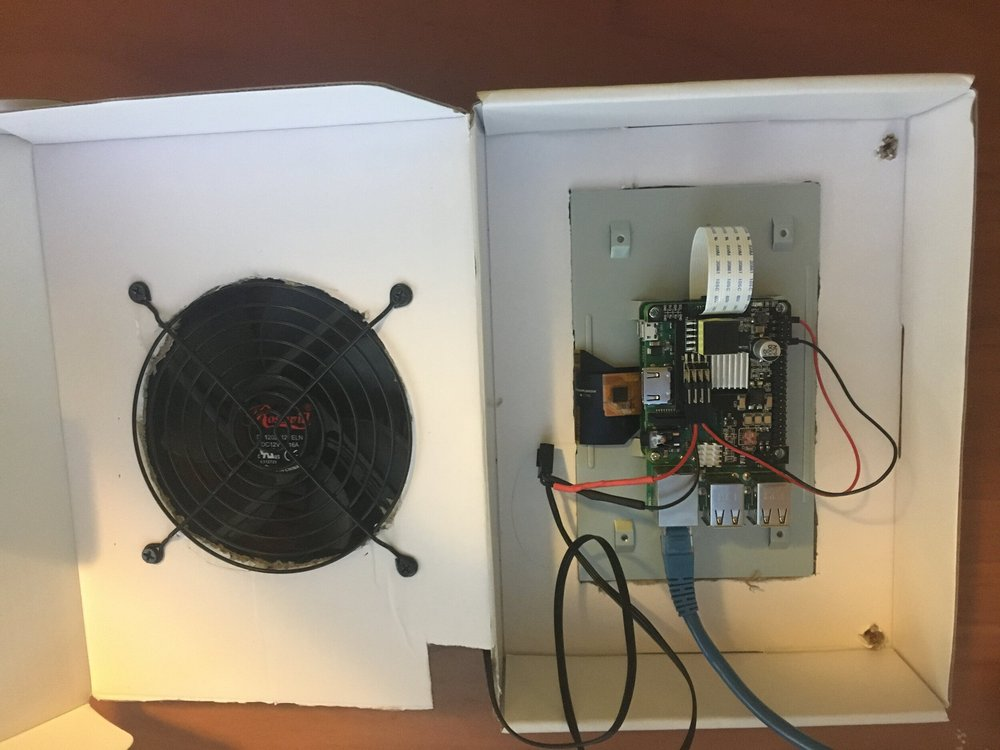
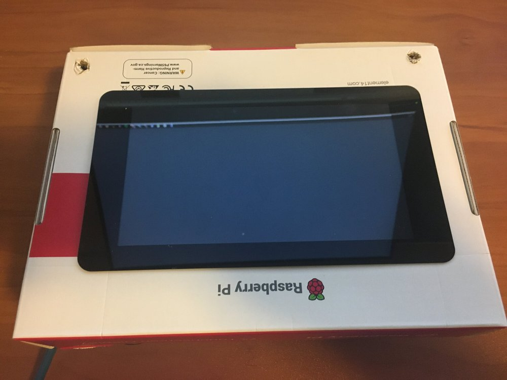

PoE Desktop - A Spontaneous Idea
The Original Plan
What if I could have an OctoPrint server for my 3D printer powered only by PoE?
Yeah, it’s dumb. If I already have the printer, then I have to have an outlet and a UPS nearby. Why PoE the Pi?
Because if this worked, I could possibly grab a few more of them and do this for all my Pis. It would save on USB space, since I’m still working on the universal 5V power system for my SBC lab. At the moment, I have three 10-port USB chargers running the lab, which are very annoying to cable manage, even though they work well.
The Raspberry Pi 3+ and 4 have four pins which, when hooked up to the right hat, can power the board with PoE. Figuring I could use this in a fun way, I ordered one for a spare 3+ I had acquired from someone at work.
It worked exactly as I expected. The moment I plugged the Pi’s Ethernet into a PoE port on my desk switch, it turned on. Working as advertised.
However, in the same Amazon box was something I had, in my haste, forgotten to take out of my cart; the ‘official’ Raspberry Pi 7” touchscreen.
I didn’t have anything to use with it except this Raspberry Pi 3+, not even a stand. I had been planning to save it for later and use it with a Pi 4 for something later on, but I had apparently not been paying attention when I ordered it.
The PoE hat covered the 5V and Ground pins completely, so I could either use this PoE hat and power the screen with USB, defeating the point of running PoE, or I could run the screen off the GPIO and take off the PoE hat, but I would still be using a cable.
After some annoyed grumblings about having to return one of the two, I happened to scroll down the PoE hat’s information page and saw something else I had missed.
The PoE hat had 5V and ground pins.
“There was no Plan”
I immediately decided that this little Pi wasn’t going to be my OctoPrint server anymore, despite the fact I had it all set up and ready to go. Instead, I would be creating a little PoE powered PC.
So I used the only stand I had available; the cardboard box the 7” touchscreen came in. I cut out a hole for the actual screen to fit in, figuring I would have to use tape or something to hold it in.
To show how not prepared for this, I was, I didn’t even have a proper cutting knife or flat-edge. I just grabbed a small, sharp kitchen knife, and free-handed most of it. The cutout was made by holding the back of the screen up to the cardboard and making marks in what I eyeballed was close enough to center.
It kinda worked. The screen didn’t fit on one side, so I trimmed back a bit more cardboard and popped it in.
My terrible cut job had pressure mounted the stupid screen in place perfectly. I didn’t even need to use tape or glue, it just stayed there because my terrible cutting job left ridges of cardboard that were now holding it in place.
Inside the box, I could assemble the rest of the Pi and screen. Pi on the screen, run the ribbon cable, then the GPIO power and finally the required cooling fa… oh.
Cooling
Now, normally, passive heat sinks would be fine, along with an open back. However, the PoE hat gets HOT. On the hat, there’s a small copper heatsink that I accidentally touched, and immediately burned myself. The PoE hat’s page also very explicitly states that this hat REQUIRES active cooling in an enclosed space.
I had a few 5V, 20mm fans from old Pi cases I had stopped using. I grabbed one and hooked it up, but the airflow was almost nonexistent. Not enough to cool the Pi, the hat, and the screen’s electronics.
So I did what anyone would do.
I grabbed a 120mm computer case fan and hooked it up to the second set of 5V power.

You can see that 120mm fan hooked to the 5V line on the PoE Hat. The other two are hooked to the screen’s power. All powered over PoE.
Ironically, this fan was a remnant of my old SBC carrying chassis, long since broken apart. It had the old fan covers as well, which meant I also had a convenient guide to cut along to make my fan hole in the box. Unlike the screen, the fan actually fit perfectly. Imagine, cutting along a guideline makes the cut cleaner.
I cut a few holes around the box, and a hole on the back for the cable, then stood back and stared at the abomination I had created.
Only for a moment though. Then I powered it up.
“We do what we must, because we can”
The fan spun. The screen lit up. The Pi worked. All over one PoE Ethernet connection.
My switch reported the entire thing was pulling 8 watts of power, four times as much as the 1080p night-vision cameras on other ports.
But it worked!
Case fans usually run at 12V, so at 5V, the thing barely spins. However, it still moves a lot of air, way more than the dinky 20mm fans I had. It was also completely silent, or at least inaudible over the hum and whir of other devices in my office.
Success!
Software - also known as SoftWon’t
Because this project was spur-of-the-moment, I had no idea what to do in terms of software. I tried Raspbian, but there was no functioning on-screen keyboard. Ubuntu has an on-screen keyboard, but oddly, only the shift and enter keys on it work, so it ends up with the same problem. Begrudgingly, I hooked up my little wireless keyboard-trackpad combo to try and use it.
However, it turns out my little wireless keyboard has some kind of issue that causes the Raspberry Pi to instantly kernel panic under Raspbian, and the dongle interferes with the uBoot process. I’ve been looking for an excuse to replace this dumb thing anyways, so I’ve ordered an actual wireless keyboard-trackpad from a more reliable brand, and plan on using that in the future.
However, as I write this, it hasn’t arrived, and it’s not that exciting anyways. All I’m going to do with it is log in and play around on a 7” screen. Maybe put up a Spotify screen, or a dashboard, or OctoPrint. Nothing special.
There are lots of tutorials for making Kiosks and the like. This won’t be one of them.
Conclusion
So, what was the point of this?
I honestly have no idea. This was just an idea I came up with because i didn’t check my cart properly before I checked it out.
However, I’m certain someone out there will find a use for something like this, or find a way to expand on it. I only wrote this up and took pictures because someone out there may be looking to do this exact thing for a more legitimate reason.

Yes it’s upside-down. That’s because I wanted the latch in the top, because I’m weird. The little holes in the front also let a little bit of air out.